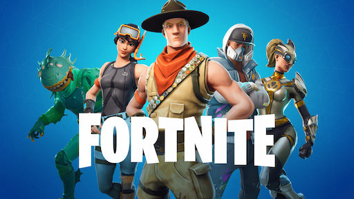
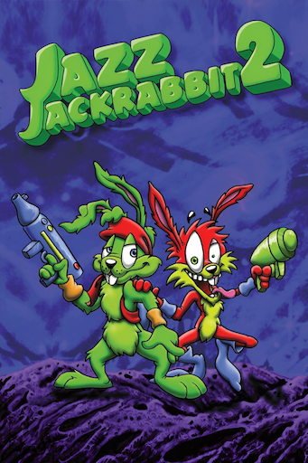
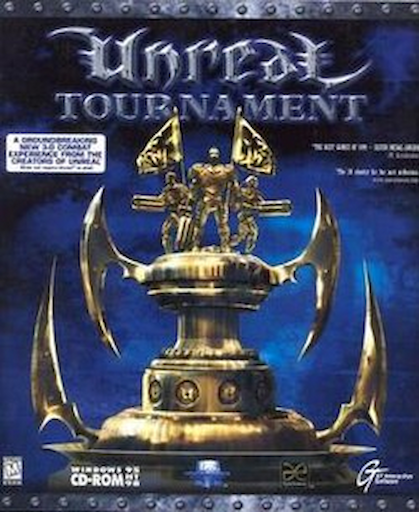
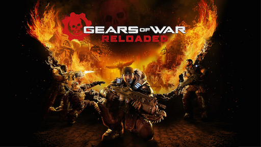

Cette image illustre parfaitement le véritable moteur du succès du studio : son département artistique. Courant 2018, Epic Games déploie une stratégie redoutable en créant un flux ininterrompu de personnages aux identités visuelles fortes et variées (allant du monstre de cinéma au super-héros). Cette capacité exceptionnelle à produire rapidement des designs iconiques a popularisé le modèle de la boutique cosmétique quotidienne. C'est ce savoir-faire créatif qui a généré un engagement record des joueurs et financé l'expansion monumentale de l'entreprise.

Bien avant la 3D et les Battle Royale, le studio s'impose dans les années 90 grâce au modèle de distribution shareware sur PC. Sorti en 1998, le jeu de plateforme Jazz Jackrabbit 2 est conçu pour rivaliser avec des mascottes survoltées comme Sonic. Ce succès critique et commercial majeur prouve très tôt la capacité d'Epic à créer des jeux nerveux et des franchises mémorables, posant ainsi les fondations de ce qui deviendra l'un des plus grands studios au monde.

Sorti en 1999, Unreal Tournament propulse Epic Games dans une toute nouvelle dimension. S'il révolutionne le jeu de tir compétitif avec son multijoueur frénétique, il sert avant tout de vitrine magistrale pour le moteur graphique maison du studio : l'Unreal Engine. En prouvant au monde entier la puissance et la fluidité de son outil, Epic commence à le vendre sous licence à d'autres développeurs. Ce coup de génie transforme l'entreprise en un fournisseur de technologies incontournable, posant les bases du moteur 3D le plus utilisé aujourd'hui dans l'industrie du jeu vidéo et du cinéma.

En 2006, Epic Games marque l'histoire des consoles avec la sortie du premier Gears of War. Le studio révolutionne le jeu de tir à la troisième personne (TPS) en démocratisant de manière magistrale les mécaniques de couverture dynamique. Véritable claque visuelle, le titre sert de vitrine mondiale pour démontrer la puissance de leur nouveau moteur graphique : l'Unreal Engine 3. Ce succès colossal prouve la capacité d'Epic à créer des blockbusters majeurs et consolide son statut de leader technologique et créatif de l'industrie.